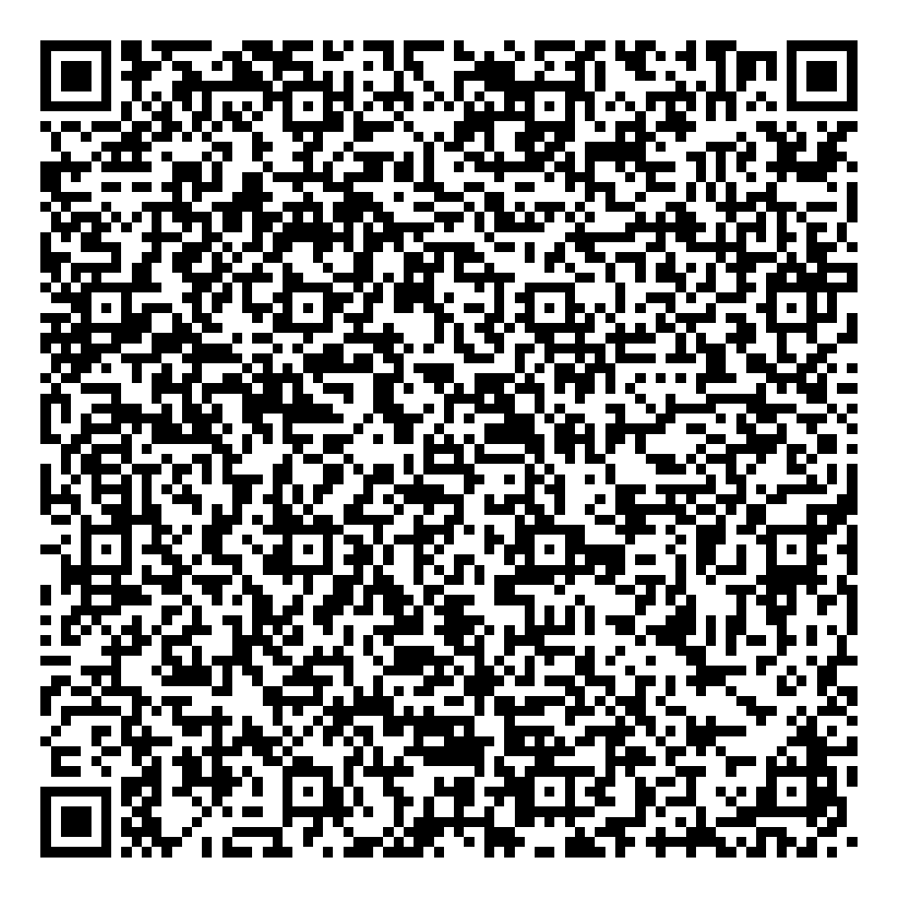

Build 177 · Version 0.13.134

From the spare tablet’s initial Android welcome screen, tap the blank welcome area six times to open QR enrollment. Connect Wi-Fi when Android requests it.
Stop after enrollment and open Setup help. Verify this tablet’s support reference in YidPad Admin recovery before entering a name or PIN. No wipe is automatic; a wipe requires staff verification and explicit confirmation.
Test recovery connection, retry, cancellation, confirmed wipe, and enrollment again. Then verify Google Play, Parent Mode, and notifications before considering shipment.
This QR contains no customer assignment or Wi-Fi credentials. Existing fleet tablets are not updated by this page.
APK SHA2565542439d008743cc1bc9fde55e7b11603f61946dfa92913b0cd2883d095860da